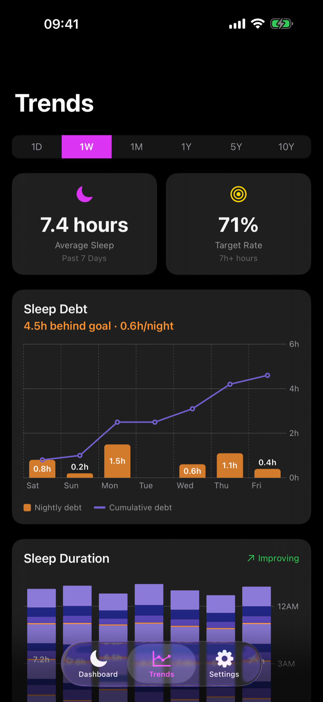
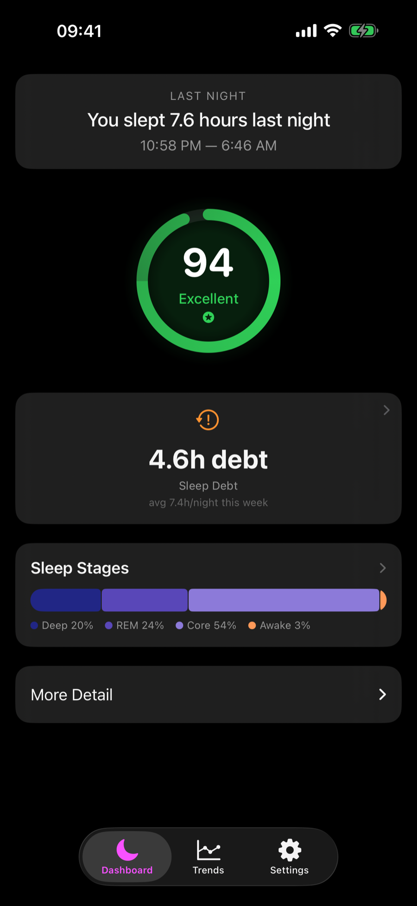
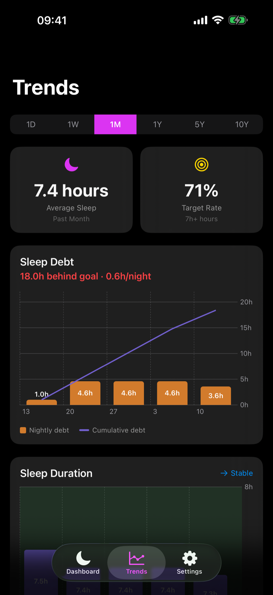

The nightly view
“How did I sleep?”
A score, last night’s duration, and stage breakdown help explain one sleep session.
Sleep debt, made visible
Sleep scores tell you how last night went. Somnus shows what all those nights add up to—your shortfall, your running balance, and how serious the debt has become.
Built for iPhone with Apple Watch sleep data

Snapshot vs trajectory
Apple Health gives you rich sleep history: duration, stages, scores, and trends. Somnus uses that same on-device sleep data to answer a different question—how far behind your personal sleep target are you becoming?
The nightly view
A score, last night’s duration, and stage breakdown help explain one sleep session.
The Somnus view
Nightly shortfalls become a running ledger, exposing a deficit that can be easy to miss one morning at a time.
See the debt build
The screenshots use deterministic sample data. They show why a perfectly good night can coexist with a pattern that deserves attention.

Last night scored 94. The week is still 4.6 hours behind. Both can be true.
Orange bars show each night’s shortfall. The purple line turns separate misses into one running total.

A manageable nightly gap becomes an 18-hour monthly deficit. Somnus can scale the same view from a day to ten years.
A simple ledger
Somnus totals the shortfall for every tracked night in the selected period. Fragmented sessions are merged, and nights with no recorded sleep are excluded—missing data never becomes phantom debt.
Private by design
Somnus requests read-only access to sleep analysis in Apple Health. Calculations happen on your device, with no account, analytics, advertising, or developer-operated server.
Under the hood
Somnus is a SwiftUI app built directly on HealthKit and Swift Charts, with no third-party SDKs. The sleep-debt engine and its unit tests are published under the MIT licence, so the numbers on screen can be checked against the code that produced them.
Look beyond last night
Somnus is pending App Store submission. In the meantime, explore the source or get in touch with questions.